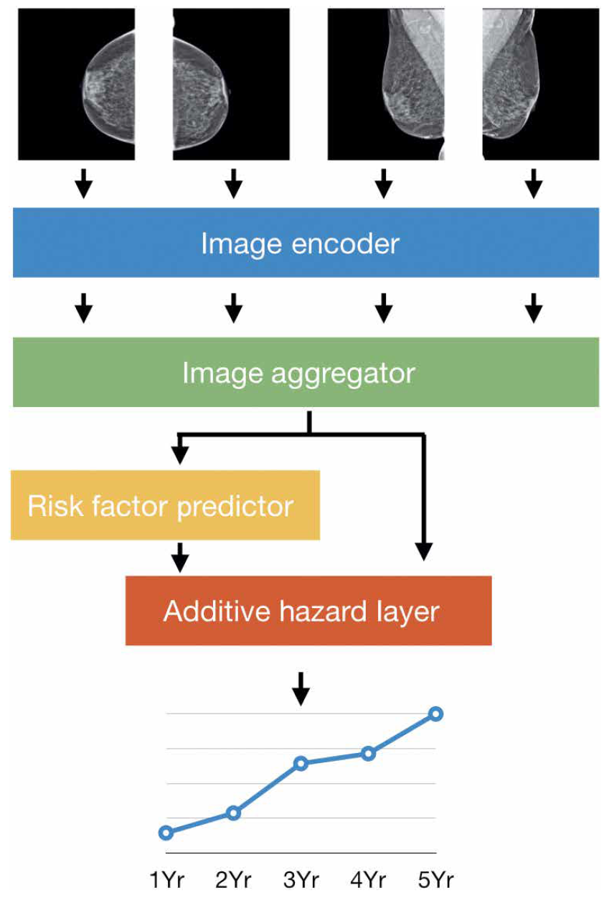

Mirai
📌 Overview
Mirai is a longitudinal breast cancer risk prediction model that combines a deep image encoder with a transformer-based temporal model to estimate future cancer risk from a sequence of mammograms.
The model processes multiple screening exams jointly and learns temporal patterns directly from image-derived representations, enabling it to capture long-term risk signals across time.
🧠 Key Idea
Mirai is built around three core ideas:
- Learned image representations: A convolutional encoder extracts compact feature vectors from each mammogram
- Sequence modeling with transformers: A transformer processes the sequence of image features to capture view and breast dependencies
- End-to-end risk prediction: The model outputs risk scores directly from feature sequences
🏗️ Architecture

The model consists of two main stages:
1. Image Encoding
- Uses a ResNet-based encoder (
custom_resnet) - Processes each image independently
- Input shape:
(B, C, N, H, W)→ reshaped to(B×N, C, H, W) - Outputs a feature vector per image
Key details:
- Encoder can be initialized from a pretrained snapshot
- Encoder can be frozen during training for efficiency and stability
2. Transformer
- Takes per-image feature vectors as a sequence
(B, N, D) - Models dependencies across views and breasts
- Outputs:
- Risk logits
- Transformer hidden representations
Key details:
- Can be initialized from a pretrained encoder snapshot
- Can be initialized from a pretrained transformer snapshot
- Learns interactions between vies and breasts
🔄 Input / Output
Input
The model expects a batch dictionary with:
images: Mammogram sequence[B, C, N, H, W]B: Batch sizeC: ChannelsN: Number of images (should be 4, 2 images for each breast)target: Risk labels[B, num_years]y_mask: Valid label mask[B, num_years]
Output
The forward method returns:
logit: Risk prediction logits[B, num_years]transformer_hidden: Final transformer representationsactiv_dict: Optional intermediate activations
🧩 Integration in This Framework
Mirai is implemented as a subclass of BaseRiskModel and:
- Uses the shared batch-based data interface
- Supports multi-timepoint (longitudinal) inputs
- Integrates pretrained components (encoder + transformer)
- Provides standardized risk head interfaces for training and evaluation
⚙️ Key Components
-
Image Encoder:
Extracts feature vectors from mammograms -
Transformer Model:
Learn dependencies across rbeasts and views -
Snapshot Loading (
load_model):
Enables reuse of pretrained encoder and transformer weights -
Freezing Mechanism:
Allows encoder weights to remain fixed during training -
Factory System (
get_model_by_name):
Dynamically constructs encoder and transformer modules
📉 Risk Prediction
- Risk is modeled as multi-year probability logits
-
The model outputs a single prediction head:
-
logit_output: Uses:logit(predictions)target(labels)y_mask(validity mask)
-
Final prediction for evaluation is computed as:
```python sigmoid(logit)